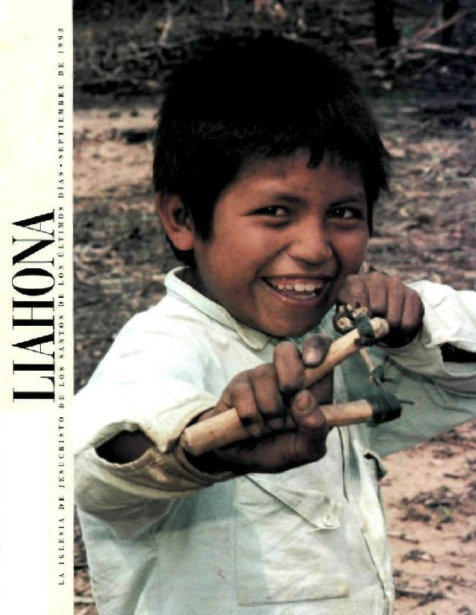

Histories
News
Challenges
Missionaries
Links
Comments
Mistolar
.net
The unique and developing history
of the Nivaclé communities
descending from Mistolar
Your Subtitle text
Links
Elder Ted E. Brewerton
Mistolar: Spiritual Oasis (Liahona, September 1990)
Mistolar: Un Oasis Espiritual (Liahona, Septiembre 1990)
Rejoice in Christ (Ensign, December 1994)
Marvin K. Gardner
Pioneers in Paraguay (Ensign, March 1994)
Pioneros en Paraguay (Liahona, Septiembre 1993)
President Elaine L. Jack
Partakers of the Glories (General Conference, October 1996)
Partícipes De Las Glorias (Conferencia General, Octubre 1996)
Matt Martinich
LDS Outreach among the Nivaclé Amerindians in Paraguay (The Cumorah Project, 2012)

Videos by Kirsten Moffat with other BYU-Idaho students on a humanitarian trip to the Chaco organized by Larry & Lara Shaw:
2013 week 1
2013 week 2
2013 week 3
2013 week 4
2013 week 5
2013 week 6
2013 week 7
2013 week 8
2013 Abundancia highlights
2013 Leaving Abundancia
SATELLITE VIEWS
Current-day Mistolar
La Abundancia